The Concentric Sampler: A musical instrument from a repurposed floppy disk drive
Abstract
This paper focuses on the redundancy and physicality of magnetic recording media as a defining factor in the design of a lo-fi audio device, the Concentric Sampler. A modified floppy disk drive (FDD) and additional circuitry enables the FDD to record to and playback audio from a 3.5” floppy disk. The Concentric Sampler is designed as an instrument for live performance and a tool for sonic manipulation, resulting in primitive looping and time-based granular synthesis. This paper explains the motivation and background of the Concentric Sampler, related applications and approaches, its technical realisation, and its musical possibilities. To conclude, the Concentric Sampler’s potential as an instrument and compositional tool is discussed alongside the future possibilities for development.
Author Keywords
Magnetic-media, time-based granular synthesis, lo-fi, redundant technologies, circuit-bending
CCS Concepts
•Hardware → Sound-based input/output; Tactile and hand-based interfaces;
Introduction and Background
Electronic commerce has fostered a model of redundancy—newer is better—leading to the proliferation of professional and consumer audio devices. As a result, a wealth of electronic music technologies are now considered obsolete, although many of them are still capable of musical expression. This aspect is frequently forgotten: newer devices are often sold on the virtue of improving upon the limitations or undesirable qualities—physical or otherwise—of those they supersede.
In the digital domain, sound—rather than being transformed or inscribed into a physical object—is converted (abstracted) into numeric form [1]. Digital computer-based systems offer nearly limitless freedom to manipulate recorded sound quickly and reliably. Conversely the inherent limitations of sound-based physical and analogue media such as magnetic audiotape, compact discs (CD) and vinyl records exhibit idiosyncrasies that include limitations in length, fidelity, ease of use—or misuse—and reliability, which are easily avoided in the digital domain.
In contrast to the ease and accuracy of digital technologies, the misuse and failure of physical sound-based media presents the opportunity to foreground the physical medium as a tool for musical expression. Circuit-bending and hardware-hacking culture celebrates such outcomes, where the creative short-circuiting of consumer-devices yields interesting and unexpected results. It is acknowledged that the evolution of technologies for recording and reproducing sound has resulted in a dichotomy between the authenticity of sound reproduction and the possibilities of expressive manipulation [2]. The vastly different creative experience of working with computer systems—compared to the medium of tape and other analogue audio technologies—supports the increase of interest in circuit-bending and instrument-building practices; the ‘failure’ of such technologies is often showcased through circuit-bending interventions. Such practices have led to the characteristics of analogue mediums being rediscovered as musically expressive. Nicholas Collins’ hacked CD players celebrate noises that are usually suppressed by the CD player [3]; Christian Marclay’s deconstructive turntablist practice gives voice to the medium of vinyl, foregrounding the clicks, pops and surface noise, acknowledging its expressive power [4]; William Basinski’s Disintegration Loops bring focus to the deterioration of old magnetic tape as it is looped, defining a listening experience and musical structure.
The concept of failure is embodied by the “post-digital” aesthetic, emerging out of the failure of digital technology, which has resulted in “glitches, bugs, application errors, system crashes, clipping, aliasing, distortion, quantisation noise and even the noise floor of computer sounds cards” being incorporated by composers into their music [5]. Such by-products of failures in digital environments are often controlled or suppressed, yet they reveal the capabilities—or lack thereof—of a device. A parallel can be drawn with a tape recorder tape path, which, if not cleaned, demagnetised and properly maintained, lowers overall fidelity, increases noise and contributes undesirable sounds to the playback of a recording. In Basinski’s Disintegration Loops the failure of the medium is in focus, rather than the mechanism.
The Concentric Sampler

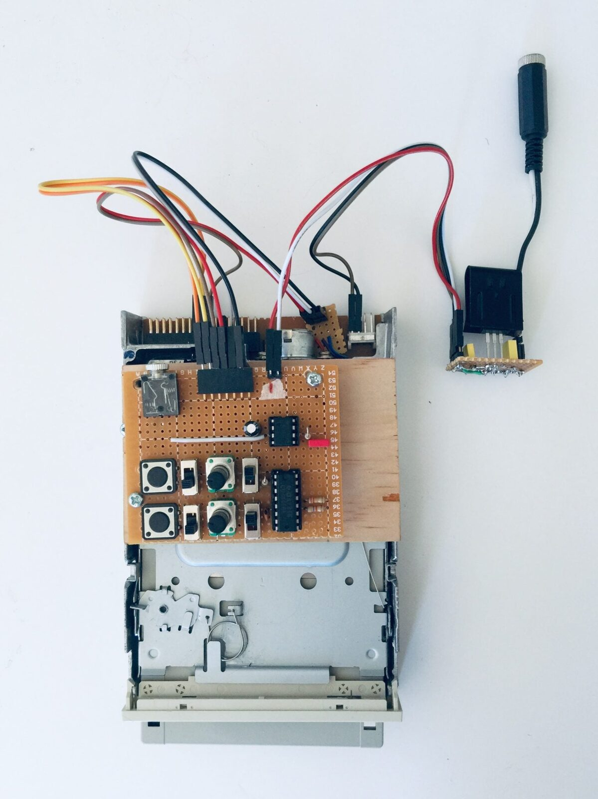
Photo of the Concentric Sampler
The Concentric Sampler depicted in Figure 1 repurposes a 3.5” floppy disk and a floppy disk drive (FDD) as a new musical instrument that can record to and playback audio from the circular platter of magnetically coated plastic inside the floppy disk. It resists the proliferation of disposable design—facilitated by capitalism as planned obsolescence—which has resulted in a shift towards a pluralistic view of newer technologies: the computer does many things; a cassette player does one. Research into its possibilities as an instrument and interface presents the Concentric Sampler as a novel instrument that generates compelling sonic content and takes an analogue approach to the recreation of time and pitch disassociation techniques—time-based granular synthesis—that are common, and straightforward in the digital domain.
Chris Cutler offers a further reading of our creative interaction with past technology, suggesting that “new applications [of a technology] then feed back again into new uses of the old technologies and so on” [6]. Today’s turntablism is built upon the notion that the record player is no longer a device for mere sound reproduction; rather, it is an instrument capable of expression and rich in cultural affordances. Similarly, the Concentric Sampler’s use of a magnetic disc for audio recording and reproduction, rather than tape, and its ability to realise simple audio sampling, looping and time-based granular synthesis gives it value as an instrument for both performance and composition and as a tool for sonic manipulation. Brian Eno gives a clear summary of this potential: “as soon as something’s on tape, it becomes a substance which is malleable and mutable and cuttable and reversible in ways that discs aren't. It’s hard to do anything very interesting with a disc—all you can do is play it at a different speed, probably; you can’t actually cut a groove out and make a little loop of it” [7].
The following section details the motivation for this research. It is further contextualised by a section explicating related applications and approaches, leading to a discussion on the Concentric Sampler—its technical realisation and its musical possibilities. The paper concludes with a discussion of the Concentric Sampler as an instrument and compositional tool and discusses its potential for future development.
Motivation
This study emphasises working within a medium’s limitation, rather than prescribing a compositional framework or sonic agenda upon it. The motivation for this study is to foreground the physical magnetic properties of a floppy disk and its drive, in a non-traditional sense, by using a circuit-bending/hardware-hacking approach and, secondly, to foreground musical and technical possibilities of the FDD through its misuse and modification. The “how” of the technology, whilst important, is led by possibilities for musical expression. The byproducts of audio reproduction by the FDD mechanism are celebrated not for their fidelity or authenticity of sound reproduction, but for their generative sonic potentials. David Toop presents a metaphor of generative sonic possibilities tied to medium, noting that Christian Marclay’s work Record Without a Cover becomes a generative sonic work that is beyond the control of its owner though the simple act of misuse: Marclay’s instructions are to store the record without a protective cover allowing for dust, scratches and warping to be embedded in the record [8]. Marclay gives voice to the sounds that are unwanted and commonly suppressed. Joseph Kramer’s concept of indexical signification to tape as a medium—hiss, wow and flutter—foregrounds tape as a generative medium; Kramer’s compositions are realised with a dual-cassette tape loop in a modified “boombox” and are enhanced by the sound of the tape and its mechanism [9]. Rather than focusing on the authenticity of the sound reproduction, the Concentric Sampler draws focus to the byproducts and the resultant indexicality and generative sonic possibilities of the floppy disk as a medium.
Related Applications and Approach
There exists a variety of repurposed floppy disk drive projects that serve musical purposes, which can be separated into two categories. Firstly, there are instruments such as the Evil Floppy Drives by Polish engineer Paweł Zadrożniak [10], which—without the use of a floppy disk—utilises the stepper motors of a FDD to produce audible tones; instructions to realise them are freely available [11]. Such instruments are unrelated to the Concentric Sampler. Secondly, other instruments employ a totally analogue process, whereby the read/write heads in the disk drive are liberated and wired to external circuitry for the recording and reproduction of audio on a floppy disk—much like that of a cassette player. Jeri Ellsworth first presented this approach in 2009 [12], with Daniel McAnulty further documenting his approach and work [13].
The Concentric Sampler builds upon this second approach. While referencing the work of Ellsworth and McAnulty, this new device extends the abilities of the FDD as an instrument. The Concentric Sampler is not simply a recording and playback device focused on the authenticity of sound reproduction, but rather foregrounds the mechanism and the possibilities for audio manipulation. As such, it is defined by three approaches:
The modification of the drive by treating the FDD as a consumer object, using as much of the drive as possible, including its internal circuitry, following a circuit-bending ideology.
The rewiring of the read/write heads to external circuitry, allowing a floppy disk to be treated like magnetic audiotape (e.g. a cassette) and the integration of external circuitry to control the two motors.
Celebrating a lo-fi aesthetic occurring as by-products of audio reproduction, wherein the indexicality of medium and mechanism are of interest.
It should be noted that the approach to this project echoes Verplank, Gurevich and Matthews’ previous NIME project, THE PLANK [14], a haptic controller based around the re-use of surplus computer hardware in a do-it-yourself fashion.
Technical Realisation
The Concentric Sampler was conceived as a performable instrument and a generative sonic tool; its technical realisation is discussed in this section. A block diagram of the Concentric Sampler is illustrated below in Figure 2.

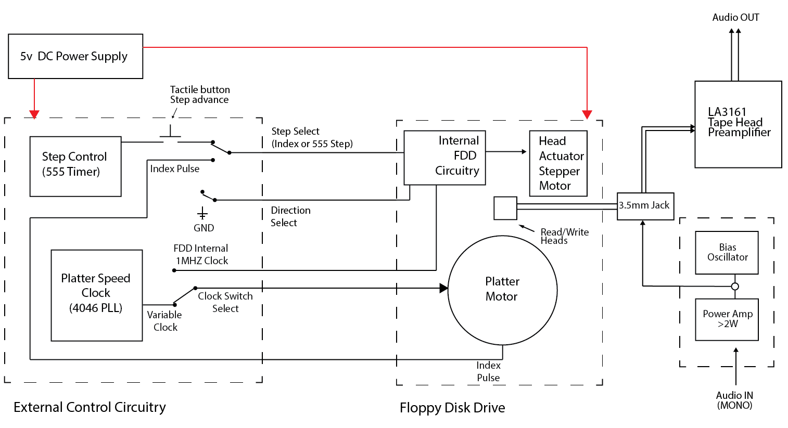
Block diagram of the Concentric Sampler
FDD Hardware and Design
A FDD uses two motors: a brushless “pancake” motor that sits below an inserted floppy disk, rotating the disk platter, and a stepper motor for moving the head actuator, consisting of a set of read/write heads for each side of the disk platter, in small increments. The Concentric Sampler utilises only one set of read/write heads. The head actuator moves both heads either forward or backward by a ‘step’ in a straight line over the exposed disk; a total of 80 steps are possible, corresponding to 80 tracks of data. The disk platter is rotated at 300rpm by default—a full rotation of the disk takes 200ms—and external circuitry makes this speed variable. The tracks are accessed separately or sequentially by moving the head actuator between tracks. Whilst these tracks seem similar to the grooves of a record they are arranged in concentric circles (individual tracks) rather than in a spiral structure (one long track) like that of a record. Figure 3 shows the relevant parts of a FDD and the concentric track arrangement on a floppy disk. It is this mechanical difference, to that of a turntable, which gives the Concentric Sampler its name and is a core element to the function of the sampler.

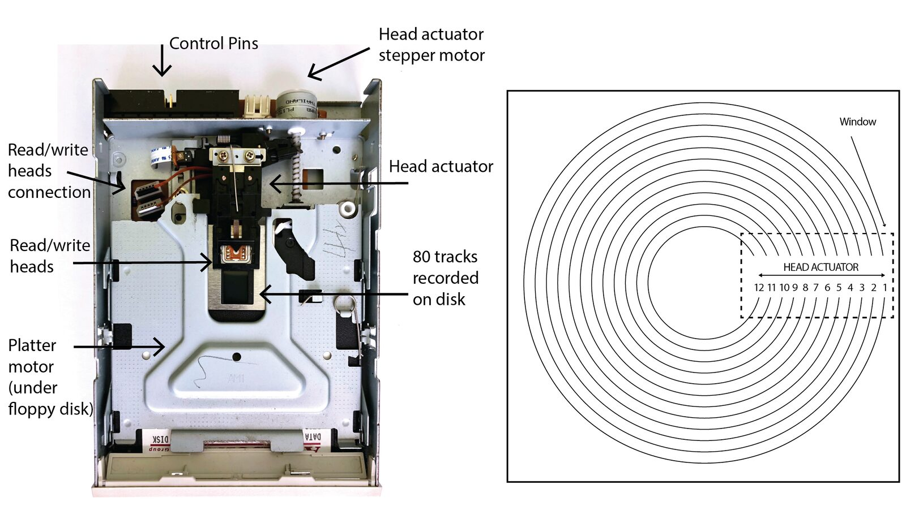
Relevant parts of a floppy disk drive and a diagram of concentric tracks on a 3.5” Floppy Disk. Twelve of 80 tracks are shown for illustrative purposes.
The FDD is interfaced with custom external control circuitry, mounted on the top of the drive (see Figure 1), that sends signals to move both motors by accessing four control pins on the rear of the drive, and various points on the FDD PCB board. The pinout for most 3.5” FDDs are the same or similar. The table below details the FDD pin that are used. Discrete and integrated circuits are utilised rather than a microprocessor such as an Arduino, for ease of signal generation and the ability to touch, and thus “glitch”, the exposed control circuits.
Floppy Disk Drive Pinout
Pin | Mode | Configuration |
|---|---|---|
Drive Select | Input | Connected to ground |
Motor On | Input | Connect to ground to enable the platter motor |
Step Pin (Head Actuator) | Input | +5V pulse to step head actuator |
Direction Select (Head Actuator) | Input | Connect to ground to select opposite direction |
The platter motor is enabled by grounding the Motor On pin; The Drive Select pin stays tied to ground. A +5V square wave pulse sent to the Step Pin increments the head actuator one step; the direction of the steps, forward or backward, can be changed by grounding or “floating” the Direction Select pin. The timing of these pulses dictates the speed at which the head actuator is moved. A 555 IC is used to generate step pulses and is variable from 3.25hz to 45hz. The platter motor speed is governed by a 1MHz +5V square wave clock signal, which it receives from the main controller IC of the FDD. By locating the clock signal path, disconnecting it by removing a resistor (R12 in Figure 4), an external clock pulse can be inserted. This is achieved using a CD4046 Phase Lock Loop IC which generates a clock pulse from 390kHz to 1.75MHz, thus the platter speed can be governed by this variable clock frequency, which is not possible with the internal circuitry. The Concentric Sampler uses both the internal and external clocks, selectable by a switch, so the platter speed can be set as fixed or variable. Modifications to the FDD’s PCB and ribbon cable can be seen in Figure 4: the purple wire is the internal 1MHz clock pulse; the blue wire is connected to the clock input of the platter motor, sending either the set or variable clock pulse. The platter motor also generates a +5V index pulse per revolution (red wire in Figure 4). If this pulse is connected to the Step Pin, the stepping of the head actuator is “locked” to a complete revolution of the disk platter: that is, it moves forward or backward every rotation. Rotational direction of the disk platter has one overriding limitation; it can only spin in one direction.

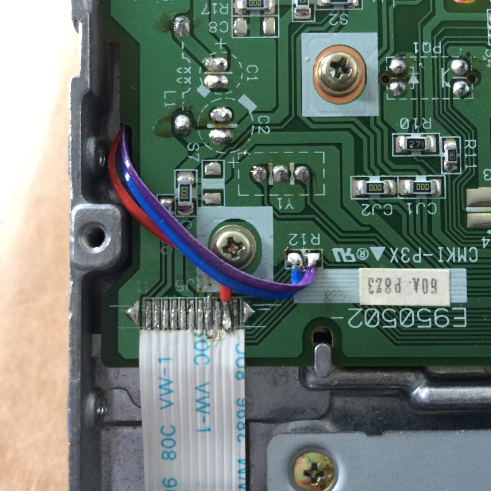
Modifications to the floppy disk drive PCB and ribbon cable
Recording and Playback of Audio
The Concentric Sampler records and reproduces audio through the integration of recording and playback circuits connected to the read/write heads of the drive; this is a purely analogue process. The setup for recording and playback can be seen in Figure 2.

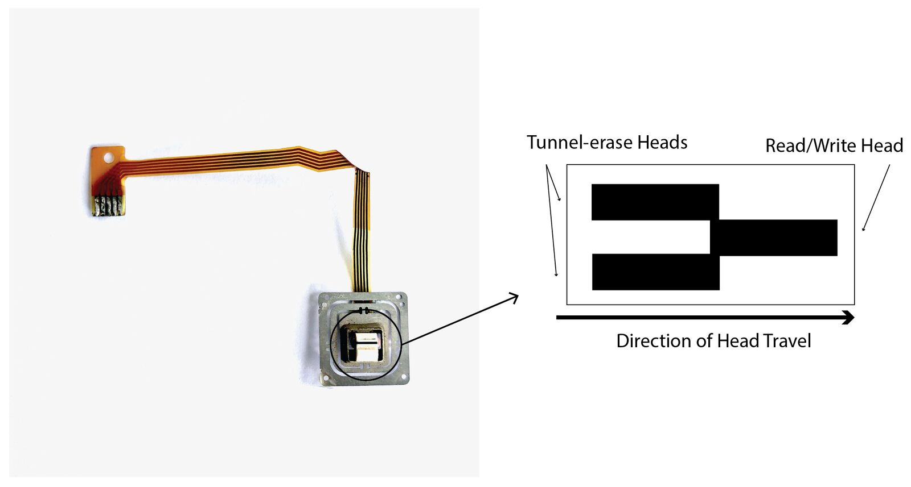
A read/write head removed from a floppy disk drive and an illustration of the heads surface.
The read/write heads of a Floppy disk are a composite unit, and consist of a single read/write head and two erase heads — see Figure 5. The heads are accessed by removing the flexible film cable from the drive and connecting the exposed connections, pictured above, to a 3.5mm stereo jack for utility. The author found that trial and error was the best method for finding the right head coil/s for recording/playback; different pin combinations yielded variations in timbre and audio levels. To record audio, a mono audio source is connected to an amplifier with a power >2W; the output is then combined with a bias signal to increase fidelity, based on a high-output bias design by John Linsley Hood [15]. The resultant signal is connected to the desired head coil. The head actuator can then be stepped through the tracks at the desired speed, left on a single track or manipulated in another fashion. For audio playback, a stereo tape deck preamplifier module is used [16] with its output amplified further.
The Concentric Sampler makes use of one head coil for recording and two for playback. Connecting the coils in a stereo configuration to the preamplifier results in a compelling stereo image that changes width in relation to the speed of the platter. A possible explanation for this phenomenon lies in the head design – see Figure 5. Scott Mueller states that the tunnel erase heads, arranged either side of the read/write head, allow for a narrow tunnel in which data is ordinarily written as opposed to the signal “naturally tapering off” and being mixed with the signal of an adjacent track with no tunnel erasure [17]. It is proposed that the use of the heads to record audio without tunnel erasure blurs the tracks into one another, since no tunnel erasure is taking place, allowing for a perceived gapless playback of audio and contributing to the stereo phenomenon stated above; the joining of each track is audible.
The audio quality of the Concentric Sampler is lo-fi with a moderate noise floor due to the amplification required to boost the signals to an acceptable level. Hum is also heard due to the read/write head being very close to the platter motor, but can be lessened through equalisation. There is scope for more development of the audio circuitry to improve recording and playback utility and quality. Demonstrative videos and a live performance with the Concentric Sampler is included in later sections of this paper.
Control Surface and Operation

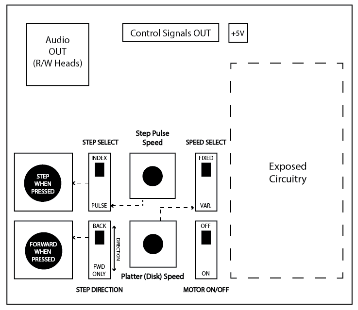
Illustrated control surface of the Concentric Sampler depicted in Figure 1.
The Control Surface on the Concentric Sampler is arranged to afford a specific user experience favouring live performance situations. It incorporates exposed circuitry that allows for “glitching” of the control signals; the platter speed increases slightly when the exposed circuitry is touched. Figure 6 details its layout. The Step button, when pressed, moves the head actuator. The Direction button, when pressed, sets the head actuator in the forward direction (unpressed sets it backwards); two slide switches are associated with these momentary buttons and are to their right. The first slide switch allows for the step source to be the output of the 555 step pulse circuit or the Index pulse (from the platter motor). If the Index pulse is used, the head actuator automatically moves forward without the Step button being pressed, allowing the head actuator to step after one revolution of the disk platter. This is useful when recording audio sequentially to each track. The second slide switch allows for a permanent setting of the direction, rather than using a momentary switch, however the Direction button only functions if this switch is in the back position. The two potentiometers are for 555 step pulse circuit and variable platter (disk) speed. The slide switch to right of the platter speed potentiometer turns the platter motor on and off and the other switch gives a selection between internal (1MHz clock) or external clock (4046 PLL circuit). A 3.5mm jack is connected to two read/write head coils.
This layout affords a compact user interaction and, by design, limits the number of parameters that can be manipulated at any one time, enforcing a need to “learn” the interface to discover performance outcomes. One limitation acknowledged is the obscuring of the head actuator by mounting the circuitry direction above them; the head position is harder to see.
Overview of Musical and Expressive Possibilities
This section gives an overview of the various musical and expressive possibilities of the Concentric Sampler; this includes examples of audio-manipulation approaches as discovered through direct experimentation and use in performance by the author. Within the scope of this study/paper, it is acknowledged that the term ‘musical expression’ here places value on the ability to shape and define a musical grammar from the indexicality of the Concentric Sampler’s medium and mechanism. It contributes to the “glitch” aesthetic by subverting traditional modes of musical expression, embracing the imperfect coupling of recorded audio and its resulting audio byproducts. In this, the Concentric Sampler seeks to “deny the transparency of the medium” [18].
Each section is accompanied by a demonstrative video, which was produced specifically for this paper and utilises the same fragment of audio used in the performance presented later in this paper. The Concentric Sampler’s direct audio output is mixed with the audio recording from the camera’s microphone, which results in audible button clicks and head actuation steps (a clicking sound) being present. Its inclusion is to aid understanding of the Concentric Sampler’s use in each example.
Simple Playback and Looping
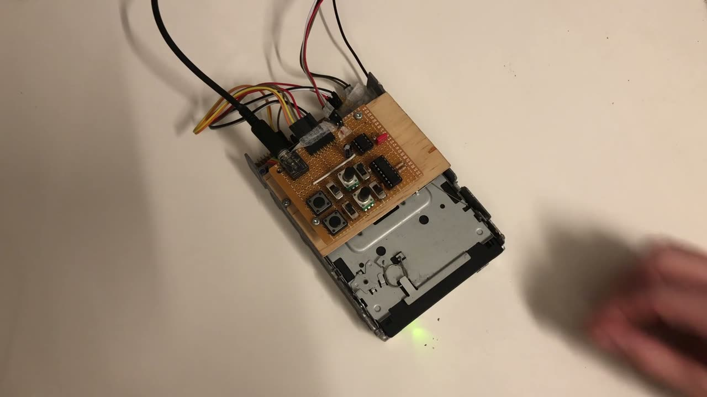
▶The sampler is played in the direction of recording and then reversed. It is then moved between these two directions. Lastly, looping of a single track is demonstrated. View video here.
The sampler can be configured to record and playback audio in a fashion similar to an audio sampler. If audio is recorded whilst moving the head actuator of the FDD through the concentric circles sequentially, and it is played back in the same parameters in which was recorded, the slices of audio are joined together into a short audio sample. Any deviation from this allows for manipulation of the audio held in each track. Since the platter direction cannot be reversed, when the heads are moved in the opposite direction to that in which audio was recorded, small sections of the audio are still played forward, resulting in a unique forward-reverse audio effect. There is no possibility of reverse playback effects—something easily achievable with magnetic audiotape. Pitch shifting can be achieved by directly manipulating the speed of the platter during playback whilst keeping the head actuator steps at the same speed used to record audio.
Some limitations do occur, which carry over in varying extents to the expressive possibilities described herein. Firstly, there is an amount of hum present in the signal which increases when the head actuator is moved closer to the centre of the floppy disk platter; this can be a feature when used with platter speed control and at lower speeds the hum is less present. Secondly, an amplitude modulation effect can be heard, which is tied to the rotation speed of the disk and, finally, if the platter speed is set too low, glitch-like sound artefacts occur. Such artefacts occur at various parts of the disk platter and are dependent of platter speed, contributing to unique sonic possibilities and reinforcing the indexicality of medium and mechanism.
Each concentric track can also be considered as a singular loop. If audio is recorded as above then each loop consists of a “slice” of audio, each with its own harmonic and rhythmic effect and is effective when used in combination with simple playback techniques discussed above. These slices can also be considered a “grain” of audio, however, where granular synthesis creates a smooth transition between grains, the process of joining each concentric track of audio together is more abrupt, rather than a crossfading between audio segments; the joining of each track is audible. Conversely audio can be recorded audio on separate tracks to allow simple tones, or timbres, to be reproduced when looped. The combination of several drives using this technique could yield interesting results when used in unison but remains untested.
Time and Pitch Disassociation
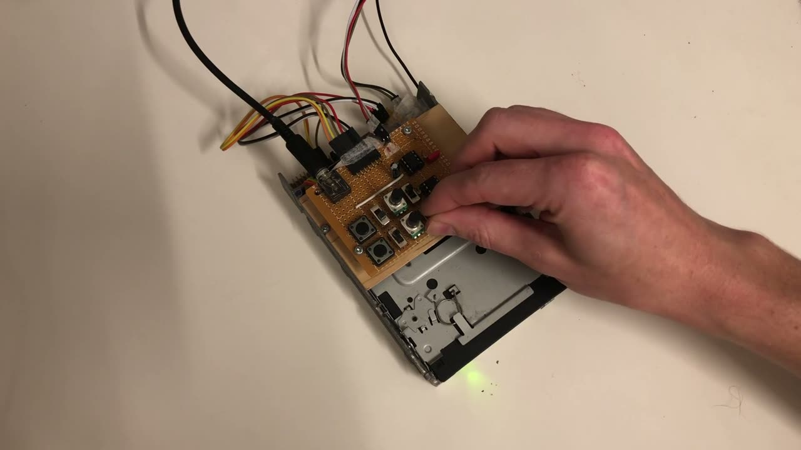
▶The platter speed is changed altering the pitch of the recorded audio, step speed is changed altering playback duration, glitch-like sound artefacts occur at low platter speeds and the head actuator is then stepped by using the Index pulse. View video here.
If each concentric track is considered a grain, the Concentric Sampler can be considered a crude mechanical time-based granular device capable of time and pitch disassociation. Wilmering et al. give an overview of the mechanical devices able to disassociate pitch from time based on “multiplicative and chop-out scanning” noting that the Springer Company’s Tempophon, and Pierre Schafer’s Universal Phonogene were two devices that utilised magnetic tape and a rotating tape head for time and pitch disassociation: “these developments constitute early examples of granulation” [19].
The Concentric Sampler achieves the dissociation of pitch and time in a similar way to the above technologies but differs since the audio is “pre-sliced” into concentric tracks. If the head actuator is moved at a rate where a track repeats several times before the head actuator moves, the effect is of multiplicative scanning, thus lengthening. Likewise, if it moves before a complete revolution of a track is complete, then it shortens the audio. Employing a step duration and platter speed different to the speed at which audio was recorded allows for the dissociation of pitch and time accordingly.
The sampler’s ability to realise crude time-based granulation allows for unique expressive possibilities and, coupled with its lo-fi nature, leans towards its potential as both a novel generative sonic tool—the audio coupled to the imperfect medium of the floppy disk—and its playability as an instrument.
Scratching/Glitching and Data Sonification
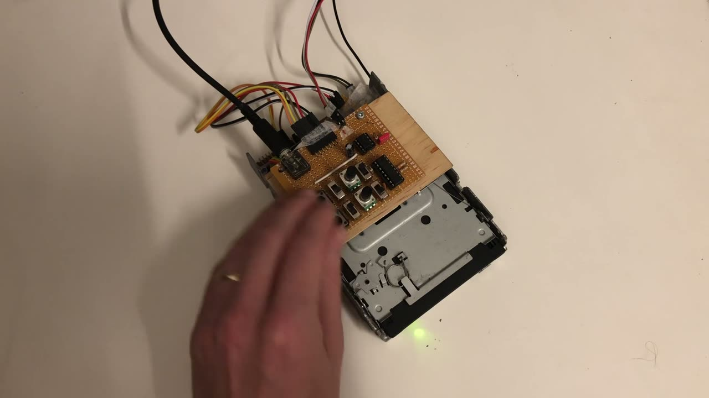
▶The head actuator is moved quickly through the tracks. The pitch of the platter is also changed and lastly the exposed electronics are touched. View video here.
Scratching and glitch-like audio effects occur when the head actuator is moved across multiple tracks at speed. Much like dragging the tonearm on a turntable across the grooves of a vinyl record, or using the “seeking” function on a CD player, snippets of audio are sonified and combined into textural and timbral utterances. It is most effective when used in a ‘seeking’ fashion, moving between and landing—thus looping—specific tracks providing gestural and timbral interest.
It was found by chance that the Concentric Sampler could also sonify floppy disks that hold data, in the same fashion as audio playback described above. A variety of sounds are heard, ranging from irregular rhythmic pulses to audible tones. The “playing” of the data held on floppy disks can be considered a type of transcoding. At present this ability to sonify data has only been explored through making recordings of the sonified data (Audio 1), which can be heard below; it has not been explored in a performance setting.
Recording of a sonified floppy disk that holds data. Listen here.
Discussion and Future Work
As an instrument, the Concentric Sampler has been used in a live performance, where a small fragment of Mendelssohn’s String Quartet No. 3, recorded to a floppy disk prior to the performance, was manipulated and reworked via direct manipulation of the Concentric Sampler’s control interface. It explored the ability for the sampler to transform the audio it reproduced using simple playback, looping, time and pitch disassociation and scratching/glitching techniques in addition to direct interaction with the exposed electronic circuitry, resulting in glitch-like effects. These parameters are tied together in an overarching trajectory of increasing musical pitch (speed of the disk platter) throughout the performance; imperfections in audio reproduction, including the presence of sonic artefacts, were heavily explored. The composition was arrived at through direct practice—hands-on learning—with the sampler. A video of this performance can be seen below:
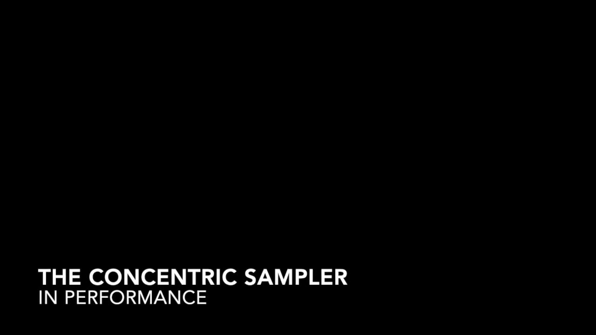
▶Performance with the Concentric Sampler by the author. View video here.
The expressive and compositional possibilities of the Concentric Sampler can be further explored in ways, echoing James Mooney, through defining a spectrum of musical possibilities within a framework of music making: “a framework is any entity, construct, system or paradigm— conceptual or physical—that contributes in some way to the composition or performance of music” [20].
Significant possibilities for compositional potential exist when considering the sampler’s mechanical function within a conceptual compositional framework, taking the parameters and mechanical aspects of the device—its limitations and novelties when recording and reproducing sound—and applying such mechanical aspects to compositional processes of pitch, rhythm and motivic material in general. What is chosen to be recorded onto the floppy disk can be considered in hand with the manipulative abilities of the Concentric Sampler. For instance, if specific pitches or rhythms were recorded to each concentric track, their combination, when sequentially read, could elicit interesting results. The concentric rings on the magnetic disk are always read “forward”, due to the sampler’s inability to spin the magnetic disk in more than one direction. If each track is read and connected sequentially (in the same direction they were written), they would always move forwards. If they were played sequentially in the opposite direction, the contents of each track would still be played “forward”, even though the head reading the track is moving in the reverse direction. If pitched and/or rhythmic material were recorded to each track, then the result would be small forward groupings of pitch or rhythm whilst moving backwards (see Figure 7). This extends to textural and timbral material; the same logic applies to the combinatorial possibilities of each track and experimentation and further development of such possibilities favour compelling generative sonic possibilities.

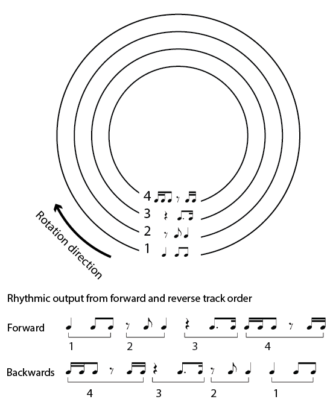
Example showing rhythmic output from forward or reverse “reading” of floppy disk tracks. Four tracks are used for illustrative purposes.
Future Work
The redesign of the control circuity and design of its control interface, in addition to the integration of a microcontroller such as an Arduino to facilitate the generation of step pulses—their speed and direction select—would provide the Concentric Sampler with extended abilities, aside from those discussed above. An example would be the asynchronous access of tracks. This could be achieved by the microcontroller recording the position of the actuator head at any given time by counting of step pulses from an initial track location. Therefore, the head actuator can be moved by programmed (sequenced) patterns or randomised patterns, rather the sequentially joining of tracks (see Figure 8).
As discussed earlier, the integration of audio recording and playback circuitry would increase flexibility and utility, and audio quality can be further addressed. The addition of a Voltage Controlled Amplifier would allow further control over the envelope of the audio output, even muting the output between asynchronous track reading. The possibility exists to physically adapt the FDD further: replacing the platter motor to reduce and/or eliminate hum; modifying the platter motor control circuitry to yield greater control over the speed and direction of the disk platter; and/or replacing the top read/write head with a conventional audio tape head while still using the bottom read/write heads.

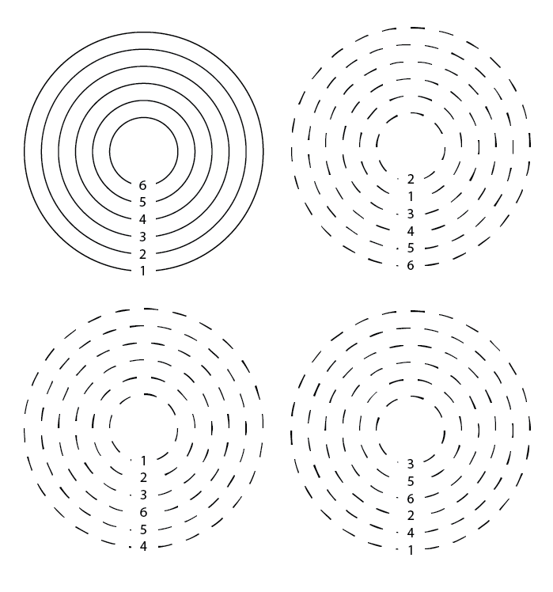
Asynchronous reading of floppy disk tracks. The solid tracks represent the physical arrangement of the tracks, as recorded on the disk platter, and the dashed tracks represent a hypothetical asynchronous selection.
Conclusions
This paper presented a novel reimagining of the floppy disk and drive as an instrument and generative sonic tool. Its possibility as a generative medium and its musical expression exist by foregrounding the mechanism of the FDD and embracing the resultant expressive possibilities, and the limitations of analogue mediums. The functioning and technical realisation were presented along with the musical and expressive possibilities and associated musical frameworks. The Concentric Sampler is unique in its use of a magnetic disc, rather than tape, to realise mechanical time-based granulation of audio, drawing focus to its medium and indexical properties.
Ethics Statement
This study reinforces the value of repurposing and redefining redundant technologies for productive purposes and adopts an inclusive approach through its connection and contribution to documented and available work surrounding the repurposing of a floppy disk drive for musical purposes. It foregrounds the sustainable development of musical instruments through novel reimagining of older sound-based technologies epitomised by a circuit-bending approach. It is positioned by explication of the technical realisation of the instrument discussed and the possibilities for musical expression and composition, not only allowing for the adaptation and development of its findings by others, but greater contribution to the expressive possibilities of older sound-based media. The author is supported by an Australian Government PhD Stipend Scholarship. There are no conflicts of interest.
Citations
- ↩Lister, M., Dovey, J., Giddings, S., Grant, I., & Kelly, K. (2003). New media: a critical introduction. Routledge.
- ↩Manning, P. (2003). The Influence of Recording Technologies on the Early Development of Electroacoustic Music. Leonardo Music Journal, 13, 5–10.
- ↩Stuart, C. (2003). Damaged Sound: Glitching and Skipping Compact Discs in the Audio of Yasunao Tone, Nicolas Collins and Oval. Leonardo Music Journal, 13, 47–52. https://doi.org/10.1162/096112104322750782
- ↩Thompson, M. (2017). Beyond unwanted sound : noise, affect and aesthetic moralism. Bloomsbury Academic.
- ↩Cascone, K. (2006). The Aesthetics of Failure: “Post-Digital” Tendencies in Contemporary Computer Music. In C. Cox & D. Warner (Eds.), Audio Culture: Readings in Modern Music. Continuum.
- ↩Cutler, C. (2006). Plunderphonia. In C. Cox & D. Warner (Eds.), Audio Culture: Readings in Modern Music. Continuum.
- ↩Eno, B. (2006). The Studio as Compositional Tool. In C. Cox & D. Warner (Eds.), Audio Culture: Readings in Modern Music. Continuum.
- ↩Toop, D. (2006). The Generation Game: Experimental Music and Digital Culture. In C. Cox & D. Warner (Eds.), Audio Culture: Readings in Modern Music. Continuum.
- ↩Kramer, J. (2017). Sounds of Wow: Tape Composition and the Poetics of the Index. Leonardo Music Journal, 27, 56–57.
- ↩Zadrożniak, P. (2011). Evil floppy drives. http://silent.org.pl/home/2011/09/29/evil-floppy-drives-english-translation/
- ↩Analogue-Chick. (n.d.). How to Make Musical Floppy Drives : 7 Steps (with Pictures) - Instructables. https://www.instructables.com/How-to-Make-Musical-Floppy-Drives/
- ↩Ellsworth, J. (2009). Floppy Drive Analog Audio Recorder « Jeri Ellsworth Dot Com. https://web.archive.org/web/20100726094124/http://www.jeriellsworth.com/?p=19
- ↩McAnulty, D. (2011). Open Music Labs Forums • View topic - getting to know your read/write heads. http://forums.openmusiclabs.com/viewtopic.php?f=11&t=92&sid=9a4c3a6763f9bc02426c9d3910187e70
- ↩Verplank, B., Gurevich, M., & Mathews, M. (2002). The Plank: designing a simple haptic controller. Proceedings of the 2002 Conference on New Interfaces for Musical Expression, 1–4.
- ↩Hood, J. L. (1995). Chapter 1 - Tape recording. In J. L. Hood (Ed.), Audio Electronics (pp. 1–56). Newnes. https://doi.org/https://doi.org/10.1016/B978-0-7506-2181-6.50004-9
- ↩Sharma, R. (n.d.). Stereo tape head preamplifier using LA3161. In Electronics-Lab.com. https://www.electronics-lab.com/project/stereo-tape-head-preamplifier-using-la3161/
- ↩Mueller, S. (2012). Upgrading and repairing PCs (20th Edition). Que.
- ↩Gurevich, M., & Treviño, J. (2007). Expression and its discontents: toward an ecology of musical creation. Proceedings of the 7th International Conference on New Interfaces for Musical Expression, 106–111. https://doi.org/10.1145/1279740.1279759
- ↩Wilmering, T., Moffat, D., Milo, A., & Sandler, M. B. (2020). A History of Audio Effects. Applied Sciences, 10(33), 791. https://doi.org/10.3390/app10030791
- ↩Mooney, J. (2011). Frameworks and affordances: Understanding the tools of music-making. Journal of Music, Technology and Education, 3(2–3), 141–154. https://doi.org/10.1386/jmte.3.2-3.141_1